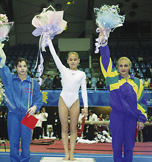

Ludmilla Yezhova (RUS)
2002 European B Champion
2004 Olympic Team Bronze Medalist

Yezhova (center), 1st AA at the 1997 China Motor Cup.
Medal Total
Olympic Games: 1
Bronze
World Championships: 2 Silver, 2 Bronze
European Championships: 1 Gold, 1 Bronze
Ludmilla was born on March 4, 1982, and trained at Dynamo Moscow. She's married to fellow gymnast Georgy Grebenkov, and recently gave birth to a daughter.
Competition Results
1995
Zoetermeer Cup: 4th AA
1996
Canberra Cup: 5th AA
Jr. European Championships: 3rd B, 7th UB
1997
China Motor Cup: 1st AA
Ecoair Cup: 2nd AA, 1st B, 2nd FX, 3rd UB
European Youth Olympic Days: 2nd AA
GBR-RUS Dual Meet: 1st Team, 3rd AA
RUS Championships: 8th AA, 1st B
World Stars: 1st UB, 3rd B
1998
Bluewater International: 2nd AA
Como Cup: 2nd AA
European Championships: 3rd B
GBR-RUS Dual Meet: 1st Team, 3rd AA
RUS Championships: 7th AA
RUS Cup: 10th AA
Wild Rose International: 2nd AA
World Youth Games: 3rd AA
1999
Cottbus International: 5th B, 14th UB (prelims), 14th FX (prelims)
RUS Championships: 7th AA
RUS Cup: 9th AA, 1st UB, 1st B, 8th FX
2000
Hypotheekshop Cup: 8th AA
RUS Cup: 12th AA
2001
Chunichi Cup: 2nd AA, 1st UB, 1st B
Massilia Cup: 4th AA, 1st UB, 5th B
RUS Championships: 6th AA
RUS Cup: 1st B
University Games: 2nd Team, 1st AA, 1st B, 3rd UB
World Championships: 2nd Team, 26th AA, 2nd B, 6th UB
World Stars: 1st B, 3rd UB
2002
Chunichi Cup: 9th AA, 1st B, 7th UB
European Championships: 1st B, 7th UB
RUS Championships: 4th AA
RUS Cup: 2nd B
World Championships: 3rd UB, 6th B
2003
RUS Championships: 13th AA, 2nd B
Voronin Cup: 28th AA, 3rd B, 8th UB
World Championships: 6th Team, 3rd B
2004
DTB Cup: 1st UB, 2nd B
French International: 1st B
Glasgow Grand Prix: 6th B, 8th UB
Olympic Games: 3rd Team
Pre-Olympic Test Event: 4th B
RUS Championships: 34th AA
World Cup: 4th UB, 6th B
2006
RUS Championships: 2nd B, 4th UB
World Cup: 8th UB, 8th B
This page was created on December
17, 2006 and was last updated on August 1, 2009.
© Gymn Forum